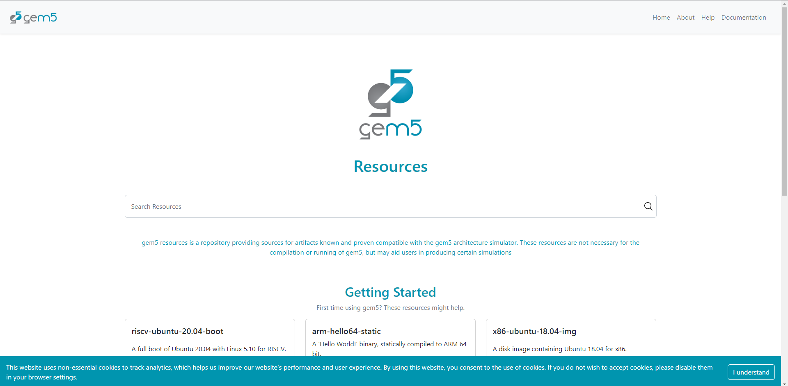
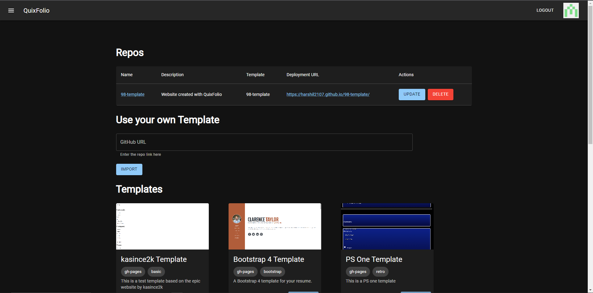
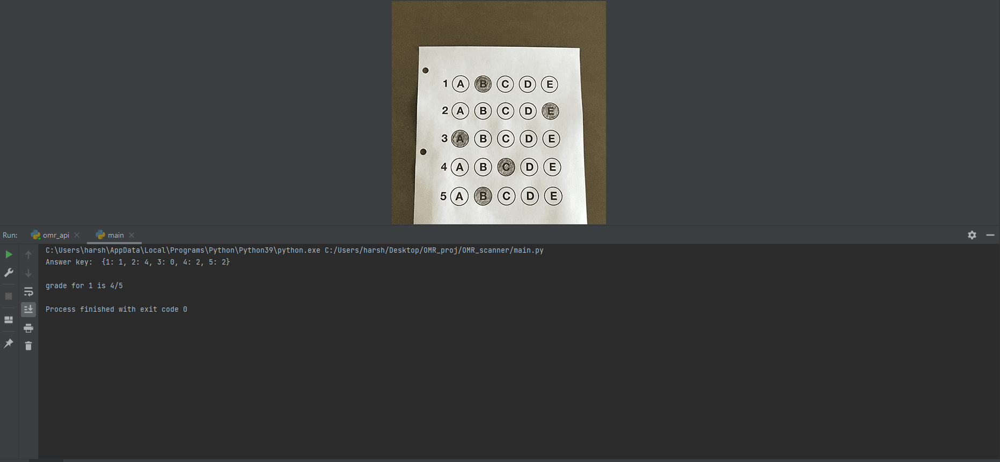

Projects
gem5 Vision (in progress)

This project is a group project which is a part of Senior Design
Project class. gem5 is a simulation software for computer architects
that provides resources like kernels, bootloaders, benchmarks, and
disk images. Currently, the resources are stored in a Google Cloud
Bucket, making it difficult for users to find what they need. The
goal is to categorize the resources, link them with example code,
and track analytics using a server. Additional goals include adding
a beginners’ section and more information about each resource. To
improve resource administration, MongoDB will be integrated into the
Python wrapper.
QuixFolio (in progress)

QuixFolio is a web application that allows users to create a resumes
and portfolios without any coding skills. Users can login via GitHub
and select a template and fill in the details. The website will
automatically create a GitHub repostiory and deploy the website
using GitHub pages. The website is built using React, Next.js, and
Tailwind CSS. The website also allows users to update and delete
their portfolios easily as well as use their own custom templates,
provided they follow our config schema.
Lstore Database Implementation
As a part of the Database Systems class, I created a relational
database implementing the feature of an Lstore. This Python-based
database supports search, insert, update, sum and delete queries. It
supports mulitple threads and is able to handle multiple queries at
the same time. It writes to disk to ensure data persistance, and
uses a BTree to index the data.
Valorant Live Bot

I created a discord bot using Discord API and python. The bot
provides details about Valorant esports like live matches, live
scores, team rankings for every region, and today’s matches. I
collected the data from vlr.gg using web scrapping.
OMR Scanner API

I created an OMR scanner that takes in a photo of an OMR sheet and
an answer key and returns the number of correct answers. I used
OpenCV to process the image and grade it. I also programmed a
Restful API using Python and Flask which allows others to send a
POST request with the answer key and image and get the grade.
Unify Course Assitant
.gif)
.gif)
Our team created Unify as a Hack Davis project and won in the
category of Best Use of Auth0.
Unify allows students to connect with other students with similar classes. Unify was made using JavaScript, React, Flask and Python. Unify allows students to add, search and remove classes, see professor ratings, export schedule calendar. It also matches students with respect to classes taken and they can connect via discord. We created our own APIs by collecting data from the internet using web scraping. We also created a discord bot using Discord API and Python to allow students to use the same features via discord.
Unify allows students to connect with other students with similar classes. Unify was made using JavaScript, React, Flask and Python. Unify allows students to add, search and remove classes, see professor ratings, export schedule calendar. It also matches students with respect to classes taken and they can connect via discord. We created our own APIs by collecting data from the internet using web scraping. We also created a discord bot using Discord API and Python to allow students to use the same features via discord.
Pathfinding Algorithm Visualizer
.gif)
I created a pathfinding algorithm Visualizer using Python and
Pygame. The Visualizer allows the user to create a maze with start
and endpoints and select from A* search, BFS, DFS, and Dijkstra’s
algorithm to find the path between the nodes.